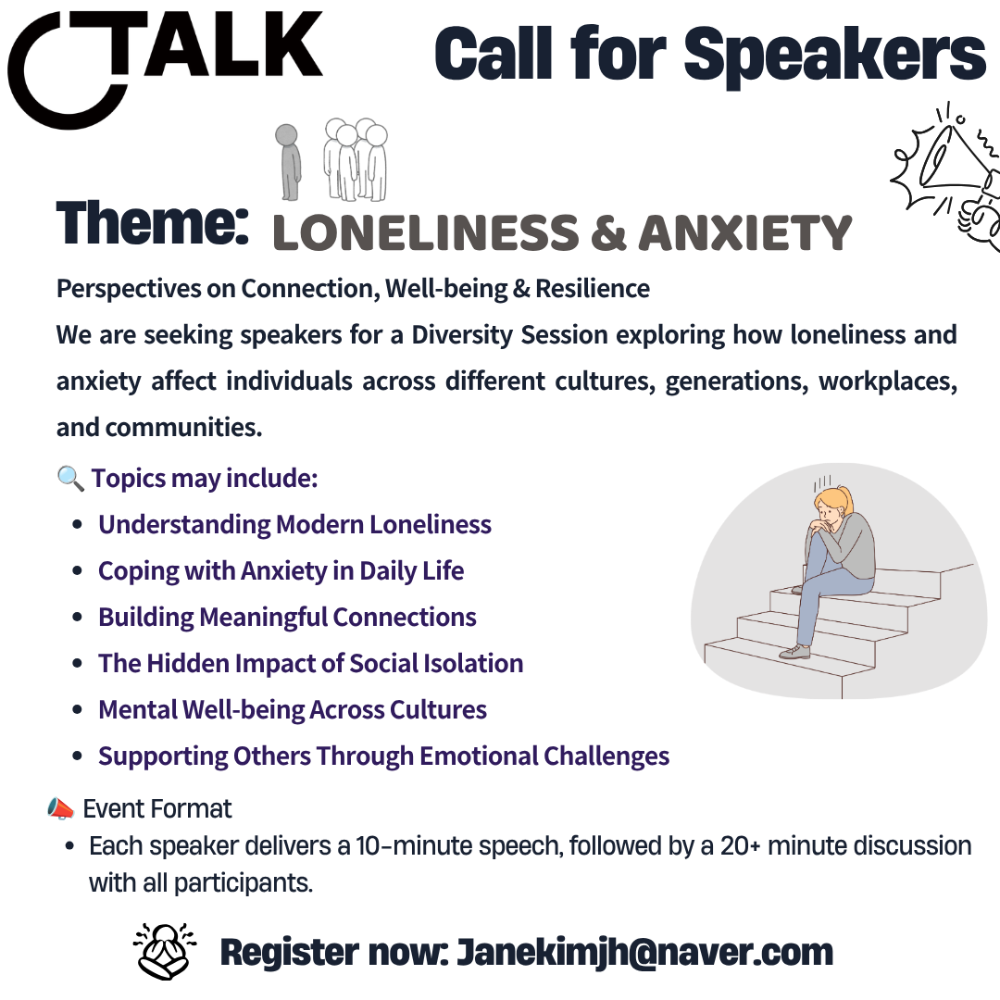
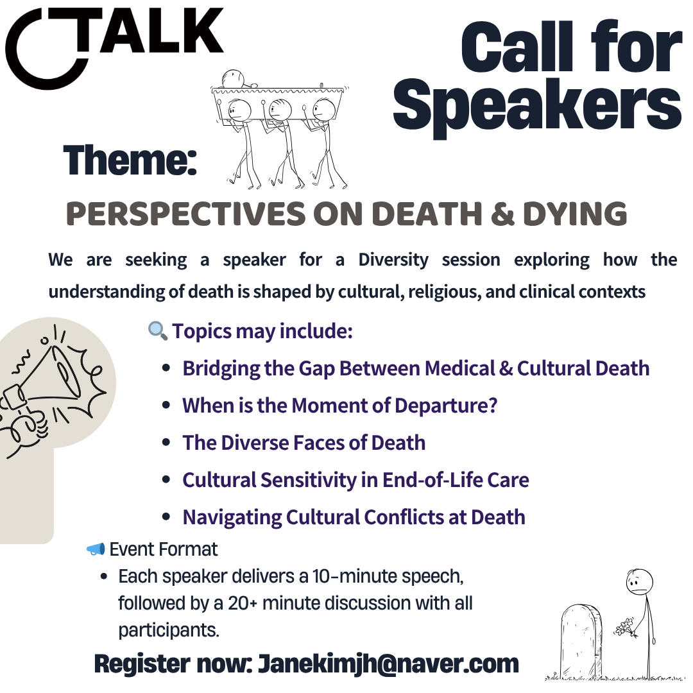
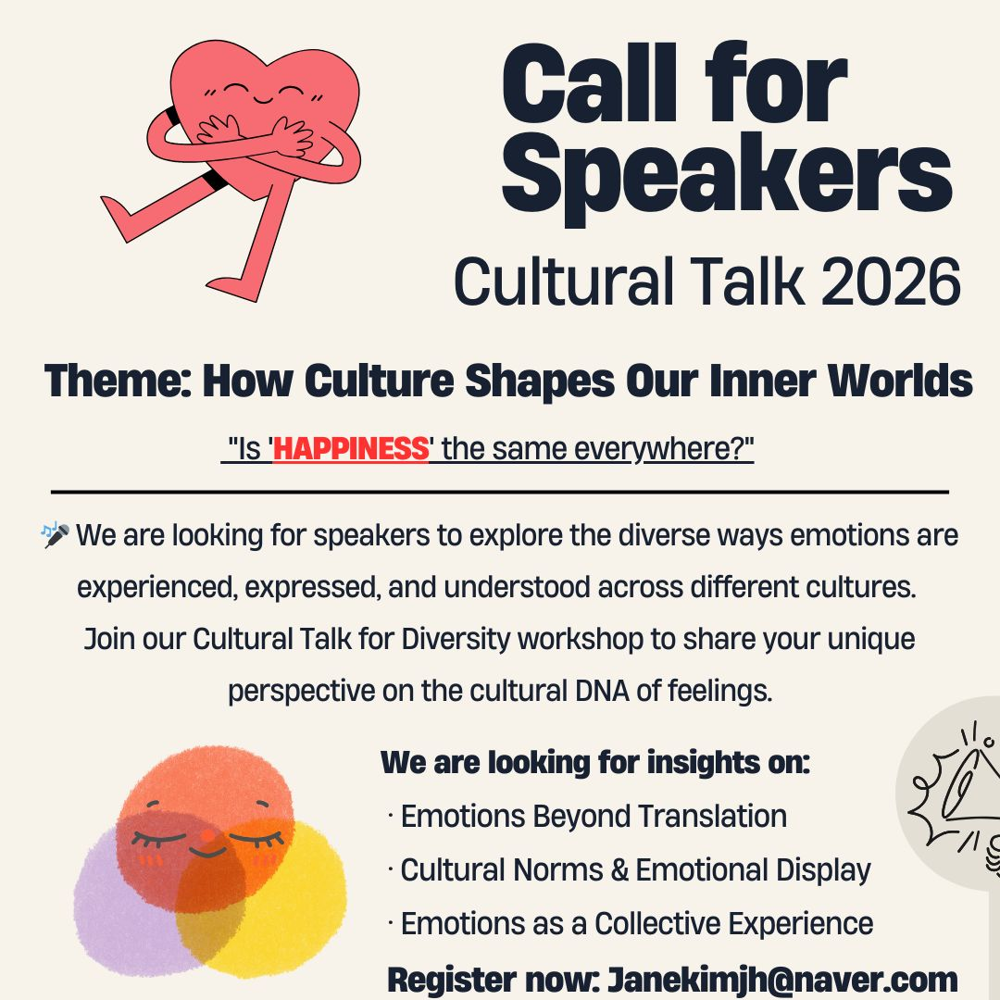

The 29th Cultural Talk brings together Sushma Pugalia and Shirly Jeong for a conversation on language, culture, and identity across Korean, British, Indian, and multilingual contexts.
The session will explore what can shift when we move between languages, from humour and politeness to rhythm, personality, emotional expression, and cultural connection.

We are seeking speakers to explore how loneliness and anxiety affect individuals across cultures, generations, workplaces, and communities.

This archived call explored how the understanding of death is shaped by cultural, religious, and clinical contexts, from medical and cultural definitions to end-of-life care and moments of departure.

This archived call explored how career breaks are shaped by gender in European and broader Western contexts, from parental leave and workplace culture to returning after interruptions.

This archived call explored how emotions are experienced, expressed, and understood across cultures, from emotions beyond translation to collective emotional life.
This archived call explored how immigration policies shape cultural integration and individual journeys, including the human face behind policy and inclusive community-building.
Cultural Talk For Diversity is a supportive community where people exchange insights on culture and DEI, creating spaces where everyone helps each other to learn more, share knowledge, and grow together through meaningful projects.